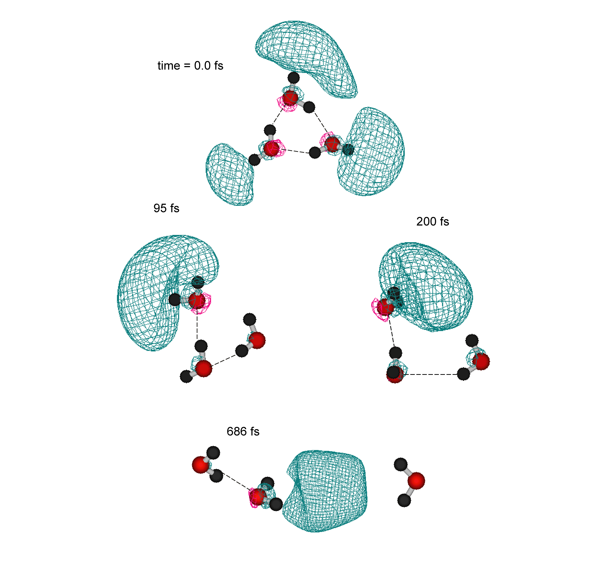

研究成果の概要
化学反応は、多数の原子の組み替えをともなう過程である。しかしながら、化学反応過程を取り扱う従来の（時間を含む）方法では、3原子または4原子からなる反応系までの取り扱いが限界であり、化学において興味となる多原子反応系に対する理論的取り扱いは非常に困難となっていた。これは、従来の化学反応を実時間で追尾する方法では、反応の道筋（ポテンシャルエネルギー面）をあらかじめ計算し、それらを解析関数に置き換えた後（解析関数へのフィッテイング操作）、反応軌跡を計算する方法が取られており、多原子系への拡張が極めて困難であることに起因する。そのため多原子分子系を3-4次元に還元する簡便法により研究が行われてきた。
本研究では、従来のような解析関数にフィッティングすること無しに、また次元数を還元することなしに反応軌跡を計算する方法（ダイレクト・ダイナミックス法）を開発した。この新しい方法は、各時間ステップで分子軌道計算を行い、エネルギーおよびエネルギー勾配を求め、全自由度に対して原子核を時間発展させる方法である。さらに、この方法をいくつかの反応系および分子系に適用し、分子設計および反応設計の支援となるモデルを構築した。
本研究の遂行により、これまでに理論的取り扱いが不可能であった多原子分子系の反応ダイナミックスを、容易にかつ厳密に量子化学的に取り扱い可能となった。主要な概要は、以下のようにまとめられる。
- クラスター内反応場での新規な反応の理論設計、および、それらの化学反応を実時間で追尾することが可能となった。
- 半導体およびグラファイト中の原子および分子（たとえば半導体中の不純物やホスト格子に捕捉された分子）の拡散現象（拡散速度の理論計算）を純理論的に明らかにすることができた。
- ポリマー中での伝導電子およびホールの存在状態、およびポリマー鎖上での移動現象を実時間で追尾することが可能となった。
- 分子設計に必要となる分子特性（吸収スペクトル、磁気的特性）の温度依存性および外部刺激に対する分子の緩和過程を理論的に予測した。それらの具体例を以下に示す。
機能性分子材料設計のための方法論の開発 --ダイレクト・ダイナミックス法の開発--
材料開発における化学理論の最大の目的は、”実験することなしに“新規の機能をもつ分子や分子材料の設計を行うことである。しかしながら、化学反応過程を取り扱う従来の（時間を含む）方法では、３原子または４原子からなる反応系までの取り扱いが限界であり、ナノ機能性分子設計において興味となる多原子反応系に対する理論的取り扱いは非常に困難となっていた。これは、多原子系を取り扱うためには、原子間の相互作用を、あらかじめ解析関数にフィッティングする必要があり、その操作に膨大な時間と労力を必要とするためである。
本研究では、機能性分子設計のための新しい計算方法（ダイレクト・ダイナミックス法）を開発した。この方法は、従来のような解析関数にフィッティングすること無しに、また次元数を還元することなしに反応軌跡を計算する方法である。本研究の遂行により、これまでに理論的取り扱いが不可能であったナノ機能性分子設計および動的現象（時間・温度）を、容易にかつ厳密に取り扱い可能となった。この方法は、これまでの方法と大きく異なり、電子状態への温度および時間依存が容易に計算できるため、分子材料開発、反応設計等に有用である。また、材料設計だけではなく、レセプターと薬剤との相互作用の解明等、幅広い分野での応用が可能である。
新規な有機電子デバイス分子を理論設計する！
最近、新規な機能を持つ分子をコンピュータの力を借りて理論設計する手法が行われつつある。従来の手法は、基本的には分子軌道法をベースとして行われているが、分子軌道法では時間と温度と含まないという本質的な欠点をもつため、化学反応や拡散が重要となるデバイス分子系に対して、全くの無力となる。一方、時間を考慮する分子動力学法は、原子間の相互作用を古典粒子として取り扱うため、結合の組み換え等の電子状態の変化と伴う現象を全く追尾できない本質的な欠点を持っている。そのため、現実的な電子デバイス分子設計をするためには、更なる方法論の開発が必要となっていた。
本研究では、機能性分子設計のための計算方法（ダイレクト・アブイニシオ・ダイナミックス法）を開発した。この方法は、従来のダイナミックス計算で用いられている手法（解析関数にフィッティング、および次元数の還元）をすることなしに反応軌跡および拡散過程を計算する方法である。この方法により、これまでに理論的取り扱いが困難であったナノ機能性分子設計および動的現象（時間・温度）を、ダイレクトに、かつ厳密に取り扱い可能となる。特に、基底状態だけでなく、励起状態での反応も同様に取り扱うことができるため、機能性分子の光物性も取り扱える利点を持つ。本研究では、ダイレクト・ダイナミックス法により、有限温度でのグラファイトおよびフラーレン表面のリチウムイオン拡散ダイナミックスを明らかにし、新規な機能をもつ分子素子の開発を行った。
Figure 1. ダイレクト・アブイニシオ・ダイナミックス法で計算したリチウムイオンの C60 およびグラファイト面上での拡散定数(D)のアレニウスプロット。温度範囲は 50-300K。(1)低温でのリチウムの拡散定数は、グラファイトに比べて C60 のほうが非常に大きく、(2)300Kを境に、グラファイト上の拡散定数が大きくなる。
Figure 2. ダイレクト・アブイニシオ・ダイナミックス法で理論設計したイオン電流スイッチング素子。C60とグラファイトナノシートから構成される。矢印はリチウムイオンの拡散経路を示す。低温（上図）でのリチウムイオンは、C60の上を移動し、一次元素子としての性質を示す。中間の温度領域（中図）では、リチウムイオンはグラファイトおよびC60の両方を移動し、2次元素子の性質にスイッチする。さらに高温では（下図）、グラファイト面をのみを移動し、温度により制御可能なイオンスイッチング素子が可能となる。
クラスター内反応場での新規な反応を理論設計する！
クラスターは、固、液、気につぐ第４の相として注目を浴びている反応場であり、従来の方法では得ることが困難であった分子を、クラスター内で反応を引き起こすことにより、容易に、かつ効率的に合成することが可能となる。たとえば、液相では副反応が多い反応系をクラスター内に閉じ込め、光によって制御することにより、特異な反応だけを選択的に起こすことができる。しかしながら、クラスター内に閉じ込められた分子の光によるイオン化ダイナミックスについての情報は極めて限られている。これは単分子のイオン化と異なり、クラスター内のイオン化では、様々な反応チャンネルを経て反応生成物へ向かうため、実験的に、その複合的な反応過程を解析するのが困難であるためである。
本研究では、
1)クラスター内での反応チャンネルを支配している因子の解明：生成物への経路は何によって支配されているか？および、
2)これらの反応チャンネルを制御する方法の開発：どのような実験条件であれば、単一チャンネルのみを取り出せるか？
の解明をめざし、ダイレクト・アブイニシオ・ダイナミックス法により、ベンゼン-水、ベンゼン-HF、エチレン-HF、およびホルムアニリド-H2Oのイオン化に伴う反応ダイナミックスを理論的に研究した。これら、すべての系において、10K以下の低温での光照射によるイオン化の場合、ベンゼンカチオン（またはエチレンカチオン）から中性分子が解離するチャンネルのみ観測されるが、30K以上の温度ではイオン-分子からなる強い結合力を持つ錯合体の観測されることを理論的に予測した。この結果は、クラスターの温度により、イオン化の際の反応チャンネルを任意に制御できることを示している。また、このモデルを拡張することにより、クラスター内での医薬品分子の分子設計が可能となる。
Figure 3. ペプチド結合のモデル分子であるFormanilide (FA)の水和構造とイオン化後のダイナミックス。FAは水分子に対して、3つの捕捉サイト(N-H, CO, and Bridge sites) を持つ。矢印は、イオン化後の水分子のトラジェクトリーを示す。N-Hサイトの水分子は、イオン化後N-H基から大きく離れるが解離せず、分子間振動する。これに対して、COおよびブリッジサイトの水分子は、イオン化後ベンゼン環の周りを大振幅振動する。それぞれのサイトの水分子は、イオン化後、大きく異なるトラジェクトリーを取る。
半導体およびグラファイト・ナノシート中のイオンの動きを実時間でとらえる！
半導体格子中に混入した不純物原子およびイオンは、格子との電子の授受物質（ドーパント）として作用するばかりでなく、格子中の結合原子間への進入により格子欠陥を作ることが知られている。そのため、この不純物原子（イオン）の動きを制御することは、新規な材料設計において不可欠な課題である。しかしながら、不純物原子が「どのようなメカニズムで半導体内を拡散し、結合原子間へ進入するか」について、これまで全くわかっていなかった。これは、実験的に明らかにするのが困難であることに加え、従来の分子動力学計算では“不純物原子や格子原子の電子状態の変化を考慮できない”ことに起因する。明らかに、拡散している原子は常に格子と電子のやり取りをしながら拡散し、移動過程全てにおいて、電子間の相互作用を感じながら移動する。すなわち、不純物原子およびその回りの格子原子の環境は、時間とともに変化する。これは、量子効果そのものである。そのため、従来の動力学計算による古典剛体粒子としての取り扱いでは、“結合の組換え”という現象を取り扱えないのは明確である。
本研究では、ダイレクト・ダイナミックス法により、シリコン結晶内での水素原子の拡散ダイナミックスを理論的に研究し、水素原子の格子Si-Si結合間への進入の現象を、「はじめてとらえる」ことに成功した。広いバンドギャップを持つダイヤモンド中においてもシリコンと同様、高温領域において格子原子間への不純物原子の進入が起きることを理論的に予測した。
また、リチウム2次バッテリーを構成するアモルファスカーボンおよびグラファイト中でのリチウムイオンの拡散現象を実時間で捉えることに成功した。その結果、室温以下の低温の場合、リチウムイオンは、グラファイトの最高被占軌道（HOMO）と相互作用しながら、節面（node）に沿って移動することを明らかにした。このことは、分子の節面を制御することにより、拡散方向を制御する可能性を示唆している。
Figure 4. ダイレクトMOダイナミックス法によって計算した「グラファイト・ナノシート上のリチウムイオンの拡散のトラジェクトリー（300および600 K）」。リチウムイオンは、グラファイト・ナノシートのHOMOの節に沿って移動する。通常の古典的MD計算でのリチウムの拡散は、方向性を持たないのに対し、ダイレクトMOダイナミックス法では、拡散の方向性が明確にでている。このことは、これまでの古典的MD法では得られない「新たな概念」を提供する可能性を示唆している。
生体内“SN2反応”を実時間で追う!
求核的２分子置換反応(SN2反応およびSN2'反応)は、生体内（特に脳内）において、アミノ基によるメチルカチオン脱離反応やイオンによる種々の置換基脱離反応等、情報伝達の初期過程をになう重要な反応である。特にこの反応は、反応時間が非常に短いことから、ロドプシン中のレチナールの光異性化反応と伴に、生体中の重要な高速反応の一つとして注目を集めている。しかしながら、これらのSN2反応は生成熱が大きいことにより、従来の統計理論が破綻するため、その反応後のエネルギー分配についての情報が全く得られていなかった。このエネルギー分配がその後に引き続いて起こる脳内での情報伝達に大きく影響するため、それらを理論的に予測しモデリングすることは、生物物理上、極めて重要なテーマである。しかしながら、その動的なメカニズムについて、ほとんどわかっていない。それは、従来の古典トラジェクトリーによる計算では、たとえば最も単純な系（F-+CH3Cl系）でさえ、12次元のポテンシャル面が必要であり、次元数を還元するなどの近似が必要であったためである。さらに、生体内で起こるSN2反応への溶媒分子の効果の解明については、従来の方法では“絶望的”であった。
本研究では、従来の方法のような「解析関数によるポテンシャル面のフィッティング」をすること無しに、各時間ステップでab-initio分子軌道法によりエネルギーおよびエネルギー勾配を計算する方法（direct ab-initio dynamics method）により、生体内での加水分解のモデル反応の一つであるイオンによるSN2反応について理論的に研究し、脳内のイオン交換反応の初期過程ダイナミックスを明らかにした。対象とした反応は、SN2反応OH-+CH3Cl、F-+CH3Cl および、その溶媒を含む反応OH-(H2O)+CH3Cl である。その結果、以下のことを明らかにした。
1)生体内でイオンの周りに共存する水分子の存在は、（たかだか１分子でさえ）反応ダイナミックスへ大きく影響し、反応速度の著しい抑制効果がある。
2)反応生成物へ至る経路として、３つのチャンネルが存在することを予測した。それらのチャンネルは、生成物が全て解離するチャンネル（ Cl- + H2O + CH3F）, 脱離したハロゲンイオンを水分子が溶媒和するチャンネル(Cl-(H2O) + CH3F), およびWalden反転した後、CH3Fを水が溶媒和するチャンネル (CH3F—H2O + Cl-)である。
3)これらのチャンネルの分岐比は、初期衝突速度により制御できることを理論的に予測した。
Figure 5. ダイレクト・アブイニシオ・ダイナミックス計算の一例（SN2反応への水分子の効果：反応F-(H2O) + CH3Cl → CH3F + Cl-(H2O) ）：時間t=0でスタートしたF-(H2O)は、CH3Clに徐々に接近し、0.21ps 秒後にCH3Cl と衝突し初期イオンーダイポール錯合体を作る。その錯合体寿命中に、F-CとCl-Cの結合の組換えが起こる（0.24-0.27ps）。その後、Cl-イオンが脱離し、その後を水分子が追従する｡生成物として、水和したCl-とCH3Fが生じる。時間0.21-0.27ps のスナップショットは、メチル基のWalden 反転の様子を明確に示している。
ＤＮＡの光刺激に対する自己防御機能メカニズムを解明する！
現代の地球大気中にはオゾン層があるため、太陽光の紫外線のほとんどは、直接地表に降り注ぐことはない。そのため、生物が強烈な刺激である紫外線をダイレクトに受けずに生存している。しかし、生物はオゾン層が大気に無かった太古地球上でも、すでに発生していた。したがって、そのころの生物は、太陽からの紫外線を（オゾン層なしに）ダイレクトに受けていたことになる。このことは、生命体のDNAが光刺激から守る自己防御機能を有していたことを強く示唆している。では、“DNAの自己防御機能とは何か？”。本研究では、DNA塩基のモデルであるアミノピリジン(AP)ダイマーをモデル化合物として、光照射後のダイナミックスを理論的に取り扱った。特に本研究では、光イオン化後および励起３重項状態ダイナミックスに注目し研究した。
計算では、アミノピリジン（AP）モノマーおよびダイマー(AP)2の構造をエネルギー勾配法で最適化し、反応のエネルギーダイアグラムを求めた。ダイナミックス計算は、本研究で開発した『Direct ab-initio molecular dynamics (MD)法』にて行った。まず、アミノピリジン（AP）モノマーおよびダイマー(AP)2の中性構造を最適化し、10Kの温度のab-initio MD計算にて、初期構造を発生させた。その中から、数点をサンプリングし、光イオン化後および励起3重項状態ダイナミックスをエネルギー一定のDirect ab-initio MD法にて追尾した。
モデルとして、DNAモデルダイマーであるアミノピリジンダイマー(AP)2の光イオン化後のダイナミックスを理論的に取り扱った。その結果以下のことを明らかにした。 (1) APモノマーは、イオン化後自己構造緩和により、10fs程度で僅かにエネルギー緩和するが、長寿命の高エネルギー状態を維持した。これに対し、(2) ダイマーのエネルギー緩和は遅いが、100fs後に水素結合に沿ってのプロトン移動が起き、エネルギーが大きく失活した。これからの事は、以下のことを示唆する。(A) DNA は、水素結合を通して光エネルギーを緩和する。(B) もし、DNAが2重ラセン構造でなく、水素結合を持たない単一鎖のラセン構造であったなら、光刺激防御機能を持たず、生物の生存は困難であったことを示唆している。
Figure 6. DNA モデル物質であるアミノピリジンダイマー(AP)2の光イオン化後の反応ダイナミックス。イオン化直後。アミノピリジン分子の自己構造緩和により、10fs程度で、いったんエネルギー緩和する。100fs後から、水素結合に沿って急速なプロトン移動が起こる。これに伴い、光吸収によって得た光エネルギーを熱エネルギーに効率よく変換する。APモノマーの場合では、水素結合に沿って起こるプロトン移動エネルギー散逸は起こらないため、光エネルギーは保持される。これは、2重ラセン構造のDNA特有の自己防御機能を示唆している。
氷に吸着したハロカーボンの電子捕捉ダイナミックス！
地球大気中に放出されたクロロフルオロカーボンは、太陽光による光分解によりハロゲンを生成し、オゾンを分解する。これに対し、極域成層圏では状況が大きく異なる。冬季における極域成層圏では、厚さ数キロメートルの低温の雲（極域成層圏雲：Polar Stratosphere Clouds, PSCs）が存在し、氷に吸着したクロロフルオロカーボンは、宇宙線の照射によって生成した捕捉電子と反応することにより、ハロゲンイオンを放出すると考えられている。
本研究では、氷に吸着したクロロフルオロカーボンの電子捕捉過程を、ダイレクト・アブイニシオMD法で研究し、クロロフルオロカーボンの電子捕捉ダイナミックスに及ぼす氷表面の効果を理論的に解明した。
計算は、B3LYP/6-311++G(d,p)レベルで、ダイレクトDFT-MD法により反応を追尾した。クロロフルオロカーボンとしてCF2Cl2を、氷として水3量体をモデルとして用い、次の3つの反応を研究の対象とした。
反応(I)は気相中におけるクロロフルオロカーボンの電子捕捉反応、反応(II)は、氷の表面に吸着したクロロフルオロカーボンの電子捕捉反応のモデル、および反応（III）は、水和電子を初期状態とし、クラスター内での電子移動により反応が進行する過程である。
反応（I）における電子捕捉の場合、捕捉直後、2つのC-Cl結合が同時に大きく伸び（R(CCl)=2.8 Å）、その後、片方のC-Cl結合が切れるため、Cl-イオンの脱離後、親フラグメントCF2Cl の内部振動エネルギーが大きく増加する。一方、水クラスターに吸着したCF2Cl2の場合（反応II）、ほとんどのエネルギーは、脱離したCl-の並進運動エネルギーへ移った。これらのことは、氷に吸着したクロロフルオロカーボンの電子捕捉ダイナミックスが、通常の気相中反応ダイナミックスと大きく異なることを示唆している。

Figure 7. 気相および氷表面に吸着したCF2Cl2分子の電子捕捉型解離反応のモデル。A：気相での電子捕捉過程のモデル図。余剰エネルギーのほとんどが、親フラグメントの内部エネルギーに流れるため、生成する塩素イオンの並進運動エネルギーは小さい。B： 氷表面での電子捕捉では、氷に吸着している側の塩素原子のC-Cl結合は電子捕捉後ほとんど伸びず、ダングリング塩素原子がイオンとしてダイレクトに解離する。そのため、大きい並進運動エネルギーを持つ塩素イオンを放出する。
ポリマー中の伝導電子およびホールの移動メカニズムを解明する！
側鎖にアミンや芳香族置換基を持つビニル系ポリマーは、エレクトロルミネッセンス（EL）発光素子やホール移動デバイスとして広く使われている。それらの発光効率は、一般に有機分子のモノマーを蒸着するよりも、その有機分子を側鎖に導入したポリマーの方が良いことが知られており、ポリマー化することにより、デバイスとしての性能が著しく高くなることが指摘されている。しかしながら、そのメカニズムに関してまったくわかっていなかった。
側鎖にアミンや芳香族置換基を持つビニル系ポリマーは、エレクトロルミネッセンス（EL）発光素子やホール移動デバイスとして広く使われている。それらの発光効率は、一般に有機分子のモノマーを蒸着するよりも、その有機分子を側鎖に導入したポリマーの方が良いことが知られており、ポリマー化することにより、デバイスとしての性能が著しく高くなることが指摘されている。しかしながら、そのメカニズムに関してまったくわかっていなかった。
本研究では「ビニルポリマー中での伝導電子およびホールが、どのように移動するのか」および「高分子化により、なぜ発光効率が増大するのか」の原因を明らかにするため、ポリビニルビフェニルをモデル高分子とし、ダイレクト分子動力学計算および分子軌道計算により研究した。その結果、1)ホール（または伝導電子）をトラップした側鎖ビフェニル基は、その直後、300-500fs時間内に構造緩和し、非常に高速で隣の側鎖と波動関数の重なりを作り、ホールおよび電子の通り道を作る、2)その後、その構造緩和-波動関数の重なりを繰り返すことにより、効率よく伝導電子およびホールを移動させることを明らかにした。これらのことを元にして、導電性ポリマーとして有利なポリマー側鎖を予測した。また、ポリシラン中のホール移動メカニズムについて解明した。
Figure 8. 計算によって得られたポリシラン（ポリジメチルシラン）中のホール移動メカニズム。通常の熱エネルギー領域でのホール移動は、主鎖に沿ってホールホッピングする。周りのメチル基は、絶縁体として働き、鎖間のホールホッピングは起きない。この状態へ光を当て励起状態にすると、メチル基の電子密度が増加するため、鎖間のホール移動が促進する。光により、ホール移動を制御できることを示唆している。
溶媒和電子生成のダイナミックスを実時間で追う！
溶質が溶媒に溶けるときに、「どのような時間スケールで、どのような過程を経て溶媒和が完了するのか」という問題は、基本的かつ重要な問題である。本研究では、ダイレクト・ダイナミックス法により、溶媒分子数を既定したクラスターでの溶媒和現象を視覚的にとらえ、そのメカニズムを解明するのが目的である。具体的には、水2量体および3量体が過剰電子を捕捉する過程を研究した。水2量体の場合、過剰電子は、水素結合されている（プロトンアクセプター）側のダイポールにより捕捉され、その後、構造変化を伴い、2つの水分子のダイポールが取り囲む構造へと移行する。この溶媒和シェル形成に要する時間は、2量体の場合、500 フェムト秒以下である。また、大きいクラスターの場合(n=6-12)においても、構造緩和時間は、1ピコ秒程度であり、極めて高速な過程であることが明らかとなった。これに伴い、1s➝2p遷移が、1ピコ秒の間にブルーシフトとして観測される可能性のあること理論的に予測した。

Figure 9. 水3量体によって生ずる水和電子の生成ダイナミックス。Direct ab-initio dynamics によって得られた水和過程のスナップショット。Iso-surfaceは、スピン密度を示す。時間ゼロで、過剰電子は3量体全体に広がっているが、時間100fs後には、2つの水分子の中心に局在化する。3番目の水は、一つの水分子に水素結合し、水3量体アニオンが生成する。
メタンハイドレートの燃焼過程を実時間で追う！
メタンハイドレートは、メタン分子が水の分子のカゴによって取り囲まれている結晶質の固体であり、燃焼において二酸化炭素を発生しないクリーンな「新エネルギー源」である。わが国は、メタンハイドレートを膨大に含む埋蔵地帯に囲まれており、この資源を有効に、かつ効率よく使うことは、日本のエネルギー資源の未来を築く上で必要不可欠な問題である。たとえば、北海道周辺では、襟裳岬沖の“千島海溝”、“オホーツク海”、積丹半島沖の“タタールトラフ”が、現在発見されており、この経済水域圏内で資源開発が可能と見られるメタンの総量は、約７兆４０００億㎥であり、これは、国内の天然ガス消費量にして、およそ１４０年分に相当する。これまでに、メタンハイドレートの構造や物性については詳しく調べられているが、その動的な状態、特に、最も重要な燃焼反応のメカニズムについてはまったくわかってなかった。メタンハイドレートを、有効な資源として最大限・効率よく利用するために、その燃焼のメカニズムを解明することは、重要な課題である。
本研究では、メタンハイドレートの燃焼反応のメカニズムを解明するため、ダイレクト・ダイナミックス法を用いて研究し、燃焼反応の第一反応ステップを明らかにし、そのメカニズムを提出した。また、水素ハイドレートの電子状態および動的状態を解明した。これまでの研究により、 (1)メタンは、カゴを構成する水分子の酸素に配向していること、および、（2）メタンの燃焼の初期過程には、イオンが関与する可能性が大きいことを明らかにした。また、高濃度水素貯蔵材料としてのハイドレートの可能性を、ダイレクト・ダイナミックス法により検討した。

Figure 10. 計算によって得られた高濃度水素貯蔵材料としてのハイドレートのモデル図。水２０量体ハイドレートは、水素分子を２分子まで取り込むことが可能である。２つの水素分子は、それぞれ、格子水分子と水素結合しており、水素分子は内部分極している（誘起分極）。この誘起分極により、２つの水素分子どうしは引力を持つ。温度依存のダイナミックス計算より、ハイドレート中の２つの水素分子は、相互作用しながら振動していることが、明らかになった。このことは、ハイドレートが、高濃度水素貯蔵材料として有用であることを示している。
水クラスターのイオン化ダイナミックスを解明する！
少数の水クラスターに電子線を照射すると、その後引き続いて起こる過程として、さまざまな反応過程が存在する。水クラスターのイオン化で生じたH2O+は、近接するH2Oにプロトンが引き抜かれて、H3O+ とOHラジカルを生ずる。その生成過程は、クラスターサイズに依存すると考えられるが、詳しくは分かっていない。
本研究では、少数の水クラスター(H2O)n (n=2-6 and 12)のイオン化後の反応過程をFull dimensional ab-initio direct trajectory 法により研究し、イオン化後のプロトン移動の速度、距離および反応のメカニズムの解明を行った。本研究で得られたモデルを図に示す。水あるいは氷に電子線照射すると、まず、クラスター内の1つの水分子がイオン化する。この時間は1フェムト秒程度であり、イオン化により水素結合したH2O+が生成する。水分子カチオンは、約10-100fs秒で水素結合をしている中性の水分子へプロトンが移動する。その後、第2段目のプロトン移動が起き(t=150-200 fs)、OHラジカルが、クラスターから脱離する。本研究では、従来の研究でまったく不明であった初期過程を明快に解明した。
Figure 11. ダイレクト・アブイニシオ・ダイナミックス法によって解明された水クラスターのイオン化初期過程のモデル。水のネットワークに光が当たると、水分子のイオン化が、1fsで起こる。その後、イオン化した水分子イオン（H2O+）は、プロトンを放出し、水素結合ネットワークに沿って隣の水分子にプロトンを受け渡す。このプロトン移動により、OHラジカルとH3O+が錯合体（イオン-ラジカル錯合体）が生成する。この第一のプロトン移動過程は、10-20fs程度の極めて早いタイムスケールで進行する。その後、50-100fs秒後に第二のプロトン移動が起き、OHラジカルとH3O+の間に水分子1個が生成する。OHラジカルとH3O+の間のアフィニティが消滅し、その瞬間、OHラジカルがクラスター外に放出され、イオン化過程が終了する。
有機・無機ハイブリッド電子材料の分子設計
有機―無機ハイブリッド錯体は、半導体デバイス分子、ＥＬ発光素子分子として新規な機能を有する化学種として可能性を持つ分子性錯体である。たとえば、有機分子である二無水ペリレンテトラカルボン酸(PTCDA)の単分子膜の電気伝導度は、10-8 S/cm程度であるが、インジウム(In)と結合することにより（錯体生成）、電気伝導度が6桁に増加する（10-2 S/cm）。また、材質がフィルム状であるため、非常にフレキシブルに富み、加工性が非常に良い特性を兼ね備えている。
本研究では、有機―無機ハイブリッド錯体を合成し、その物性を明らかにするとともに、ab-initio法、DFT法およびダイレクト・ダイナミックス法などの理論的方法より、構造、電子状態、および、それらへの温度効果を理論的に解明し、新規な機能をもつ有機―無機ハイブリッド錯体を分子設計する。さらに、得られた結果を機能性分子および機能性材料の理論設計、および特異な反応性を持つ分子の理論設計に拡張することを目標とする。本研究の遂行により、「特異な反応性を持つ機能性分子および機能性材料の開発」をする上で、重要かつ有力な情報を提供し、新規な材料開発をする上でのブレイクスルーになるものと期待される。
Figure 12. ダイレクト・アブイニシオ・ダイナミックス法によって解明されたIn-NTCDAハイブリッド錯体の電子電導メカニズムと、水による劣化のメカニズム。電子は、インジウムの架橋によりスムーズに移動する。インジウムーカルボニル間の結合エネルギーが大きいため、温度をかけても劣化しない。しかし、このデバイスに湿気（水分子）が加わると、インジウムを剥ぎ取り劣化する。インジウムは、カルボニル酸素とペリレン中央の酸素との間に水和され、安定化する。 この劣化を食い止める、より高機能な分子は、ペリレン中央の酸素を修飾した分子であることが本研究によって明らかになった。